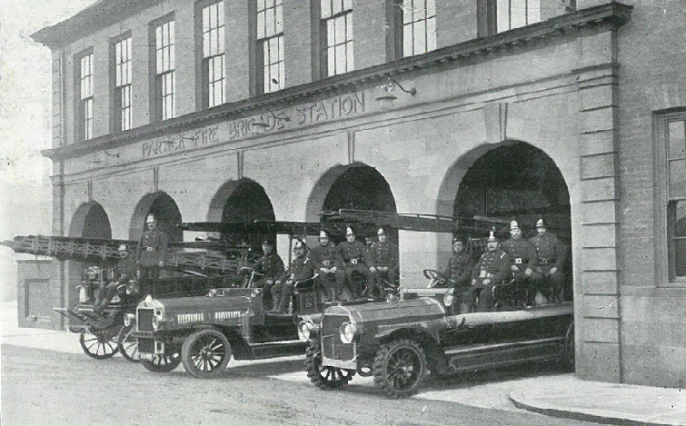
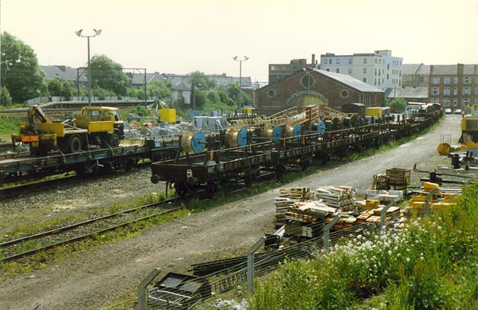

Thornwood is a neighborhood steeped in history and marked by remarkable transformations. From the awe-inspiring Meadowside Granaries to the modern Glasgow Harbour development, Thornwood has witnessed the ebb and flow of progress. Join us on a captivating journey through time as we explore the fascinating past of this remarkable area.
For much of the 20th century, the Meadowside Granaries defined the Thornwood skyline. The first granary was established in 1913 and played a crucial role in grain storage during World War I. Over time, additional granaries were constructed in 1937, 1960, and 1967. It ended up as the largest grain store in the United Kingdom and the largest brick building in Europe. The granaries finally closed in 1988, and their demolition in 2002 marked the end of an era.
Prior to the 19th century, Thornwood was an expanse of open farmland. However, rapid urbanization transformed the area into a thriving community. A comparison of maps from 1892 and 1914 showcases the astonishing change, with tenement blocks now gracing the landscape.
The oldest tenements in the area are those located at the junction of Crow Road and Dumbarton Road. Dating from c.1850 they are easily recognisable as they differ from the more usual red sandstone tenement. They were built for business partners Robert Wylie and James Lockhead and the development was called Downie Place after their respective wives, the sisters Downie.
Granny Gibbs Cottage, built in 1796, was an inn popular with the West Highland cattle drovers bringing their sheep and cattle to market. It was situated near to the present day Thornwood roundabout. It was demolished in 1894 to make way for the westward spread of tenements along Dumbarton Road. These tenements were themselves demolished in the early 1970s when space was needed for the roundabout and associated flyover.
Partick Fire Station was built in 1907 as a horse drawn fire station with stabling for eight horses. Partick became part of the Glasgow Fire Brigade in 1912. In addition to accommodation for the permanent staff of firemen and their families, the buildings include Engine Room, Watchroom, Workshops, Hose Tower, and Recreation Rooms. The station was one of five city fire stations which received direct hits during a bombing raid in the city in 1941.

The station was closed in 1985 and the building was bought by the Meadowside and Thornwood Housing Association and converted into 23 flats.
While shipbuilding may be what first comes to mind other industries also thrived in the area. John Thomlinsons had a stationer's business with its main office on Dumbarton Road. The printing and manufacturing was carried out at the Stanley Works behind it in Norval Street. This building can be seen in the picture of Partickhill station on the left behind the platform. From the production of collapsible cardboard boxes to various office stationery items, Thomlinsons catered to a wide range of needs and the company continued trading until 1999. Today, the building has been converted into apartments, preserving its history as part of its address, The Printworks, Norval Street.
Next door John's brother, William Thomlinson, owned the Greenbank Leather Works. Among other things this factory produced the Thomlinson "T" football, the most famous make of football in Britain before the advent of the modern ball made of stitched hexagons and pentagons. In 1946 British Pathe produced a short documentary about the work of the factory.
Thornwood was once home to three train stations that facilitated transportation and trade.
While now largely hidden beneath rubble and vegetation, remnants of Crow Road station can still be glimpsed from the footpath that runs from Crow Road to Clarence Drive opposite Cross Park. The station ceased passenger operations in 1960, and the line itself closed in 1966.
Partickhill train station was situated on the north side of Dumbarton Road and served the area from 1882 until its closure in 1979. It was eventually replaced by the present-day Partick Station, located just across Dumbarton Road. Today all that remains of Partickhill are the platforms.
Positioned behind the tenements on Dumbarton Road, Partick West station was situated just off Meadow Road. The station was adjacent to a triangular junction linking the East-West line to one running North to Crow Road and beyond. The site of that triangular junction is now home to Glasgow West End Police Station. Where the lines once headed North and entered a tunnel on their way to Crow Road, children play and locals enjoy the sun in Thornwood Community Park.
Just north of Partickhill station were some railway sidings and a goods yard. This space is now the West End Retail Park.
During the middle decades of the twentieth century Thornwood boasted two cinemas.
Directly over the road from the railway sidings was the Tivoli.
The Tivoli opened in 1929, changed its name to the Classic in 1967, and closed and became a bingo hall in 1972. The building was demolished in the late 90s and has been replaced by residential and retail units.
The other cinema in Thornwood was the Rosevale. This had it's entrance on Dumbarton Road but the main auditorium was in the back court behind the tenements.
The Rosevale opened in 1920, was enlarged to seat 2,100 in 1932, and remained as a cinema until 1965. What was once the foyer is now a British Heart Foundation Furniture & Electrical shop. The main building still stands and backs onto Rosevale street.
Two pubs that have served generations of locals are The Rosevale and The Thornwood.
The Rosevale opened in 1923 on a site previously occupied by William T Wyllie's wholesale Wine & Spirit Merchant.
Just along from the Rosevale, and originally next to the entrance to the Rosevale cinema, is the The Windsor Tavern. The Windsor started life as a restaurant and gradually changed into the pub it is today.
At the other end of the street, The Thornwood proudly claims that it was established in 1890. This means that a pub has occupied this site from when the tenements were first built.
Another pub that served the community was the Ettrick Bar.
This was on the corner of Dumbarton Road and Crawford Street. It was on the south side of Dumbarton Road about 50 metres west of the junction with Rosevale Street. The pub closed in the 1970s. The pub, the surrounding tenements, and even the road junction have all now disappeared, replaced by modern housing.
These days the residents of Thornwood have an enviable range of places where they can meet to socialise and take refreshment.
On the night of January 14, 1968 Glasgow was hit by a fierce storm with record wind speeds of over 125 mph. The city experienced severe damage, and is remembered as the night the chimneys came down.
The storm resulted in the loss of 20 lives, with the worst casualties occurring in a tenement on Dumbarton Road. Two mothers and their two daughters died when a chimney stack from the adjoining tenement collapsed through their roof.
The tenement in which the tragedy occurred was demolished and is now the site of the Community Centre For Health (Sandy Road).
Whilst some old buildings have been kept and repurposed Thornwood has always had its share of new buildings.
Completed in 1952, Crathie Court provided eighty-eight bedsits for unmarried women, earning it the nickname "the spinster flats." The remarkable design of Crathie Court led to it receiving the prestigious Saltire Award for the best-designed flats in Scotland in 1952. It was B-listed in 2012.
More recently, the Glasgow Harbour development, rising from the ashes of the Meadowside Granaries, has attracted many newcomers, adding to our Thornwood community.
Among the many tales surrounding Thornwood, an intriguing one suggests that Merlin, the legendary figure of Arthurian lore, may have once resided here. According to Adam Ardrey, Scots advocate, amateur historian, and author of 'Finding Merlin,' Thornwood's Apsley Street and Ardery Street might have been the ancient dwelling place of Merlin, known originally as Myrddin. While the exact truth may remain shrouded in mystery, this local legend adds an enchanting dimension to Thornwood's historical tapestry.
Thornwood continues to evolve and thrive. From its agricultural roots to the rise of industry and the modernization of its landscape, this remarkable neighborhood embodies the spirit of progress and the preservation of heritage. As Thornwood continues to change, it remains deeply connected to its past, ensuring that the stories of its pioneers and legends will endure for generations to come.
Maps reproduced with the permission of the National Library of Scotland
Digital Commonwealth, Massachusetts Collections Online
Image courtesy of Scottish Roads Archive
Image courtesy of © Glasgow City Archives
Image courtesy of © CSG CIC Glasgow Museums and Libraries Collection: The Mitchell Library, Special Collections
Image courtesy of © CSG CIC Glasgow Museums and Libraries Collection: The Mitchell Library, Special Collections
Image courtesy of © CSG CIC Glasgow Museums and Libraries Collection: The Mitchell Library, Special Collections
 Railscot
Image courtesy of © CSG CIC Glasgow Museums and Libraries Collection: The Mitchell Library, Special Collections
Image courtesy of Clyde Property, West End branch
Permission to re-use images should be sought from the copyright holders. All relevant permissions have been sought and there is no intention to infringe copyright. Please contact if you think an image has been wrongly used.